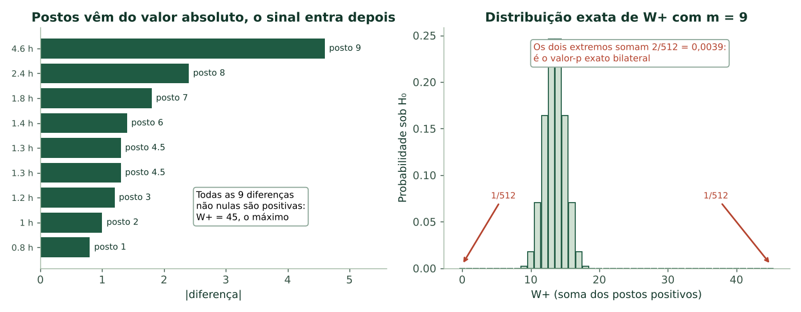
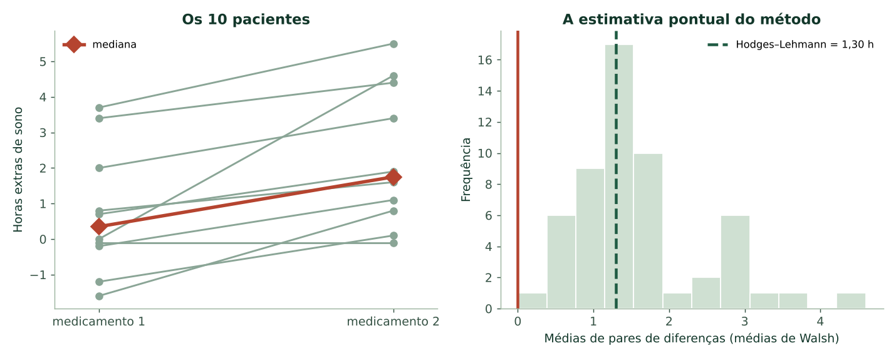

Wilcoxon signed-rank (pareado)
Verifica se diferenças pareadas apresentam deslocamento sistemático em torno de zero, usando os postos dos valores absolutos.
Comece por aqui
Na ficha do teste t pareado analisamos os dados de Student sobre dois medicamentos para dormir e chegamos a um resultado claro — mas com uma ressalva: o teste de normalidade das diferenças falhou (p = 0,033), puxado por um paciente cuja diferença foi muito maior que as demais. O teste de Wilcoxon de postos sinalizados é a alternativa que não depende dessa suposição.
Wilcoxon propôs dois procedimentos no mesmo artigo de 1945: o de soma de postos, para duas amostras independentes (ver Mann–Whitney), e o de postos sinalizados, para dados pareados, tratado aqui. O R distingue os dois pelo argumento paired.
O que é o teste
Calculam-se as diferenças \(d_i\) de cada par e descartam-se as iguais a zero. Os valores absolutos \(|d_i|\) recebem postos, e soma-se o posto daquelas cujo sinal é positivo. Se não houvesse efeito, as diferenças positivas e negativas deveriam ocupar posições parecidas na ordenação, e essa soma ficaria próxima da metade do total.

O teste t usa a magnitude exata de cada diferença; o teste do sinal usa apenas a direção. O Wilcoxon fica no meio: usa a direção e a ordem das magnitudes. Com isso ganha poder sobre o teste do sinal, sem depender da forma exata da distribuição.
Pressupostos e como verificá-los
| Pressuposto | Por que importa | Como verificar |
|---|---|---|
| Pares definidos pelo delineamento | O pareamento vem do estudo, não dos dados. | Protocolo. |
| Pares independentes entre si | A dependência permitida é só dentro do par. | Delineamento. |
| Diferenças com distribuição simétrica em torno da mediana | É o que justifica usar os postos com sinal. | Histograma e boxplot das diferenças; se houver assimetria forte, use o teste do sinal. |
| Variável ao menos ordinal, com diferenças ordenáveis | O método compara magnitudes de diferenças. | Natureza da variável. |
| Poucos empates e poucos zeros | Afetam o cálculo do valor-p exato. | table(abs(d)); o R avisa quando ocorre. |
| Normalidade | Não é exigida. | — |
Hipóteses e estatística de teste
Em que:
- \(d_i\)
- diferença do par i
- \(m\)
- número de diferenças não nulas
- \(W^{+},\ W^{-}\)
- somas dos postos das diferenças positivas e negativas
- \(t_j\)
- tamanho do j-ésimo grupo de valores absolutos empatados
- \(z\)
- estatística padronizada, com correção de continuidade
Exemplo numérico, passo a passo
Nos dados do exemplo há dez diferenças, uma delas igual a zero. As nove restantes, com seus postos:
| |d| (h) | 0,8 | 1,0 | 1,2 | 1,3 | 1,3 | 1,4 | 1,8 | 2,4 | 4,6 |
|---|---|---|---|---|---|---|---|---|---|
| Posto | 1 | 2 | 3 | 4,5 | 4,5 | 6 | 7 | 8 | 9 |
| Sinal | + | + | + | + | + | + | + | + | + |
\[\begin{aligned}W^{+} &= 1+2+3+4{,}5+4{,}5+6 \\ &\quad +7+8+9 \\ &= 45\end{aligned}\] e \(W^{-}=0\); de fato \(45+0=9\times10/2\).
Valor-p exato: com nove diferenças não nulas há \(2^9=512\) arranjos de sinais igualmente prováveis sob \(H_0\). Apenas um deles dá \(W^{+}=45\) e apenas um dá \(W^{+}=0\), logo \(p=2/512=0{,}0039\).
Aproximação normal: \(E(W^{+})=22{,}5\); \(\operatorname{Var}(W^{+})=71{,}25-6/48=71{,}125\); \(z=(45-22{,}5-0{,}5)/8{,}434=2{,}609\) ⇒ \(p=0{,}0091\).
As duas rotas não coincidem porque há um empate (duas diferenças iguais a 1,3) e um zero. Nessa situação o R abandona o cálculo exato e devolve a aproximação, com um aviso.
Propriedades e estimativa pontual
- \(0\leq W^{+}\leq m(m+1)/2\).
- Sem empates e sem zeros, o valor-p é exato, obtido por enumeração dos sinais.
- A estimativa pontual associada é o pseudomediano de Hodges–Lehmann: a mediana das médias de todos os pares de diferenças (as médias de Walsh).
- O intervalo de confiança sai da inversão do teste (
conf.int = TRUE). - O tamanho de efeito usual é \(r=z/\sqrt{m}\), e também se reporta a proporção de diferenças positivas.
- O teste é equivalente ao teste t de uma amostra aplicado aos postos sinalizados.
Como interpretar os resultados
| Elemento | O que informa | Cuidado |
|---|---|---|
| V (ou W⁺) | Soma dos postos positivos. | Perto do máximo ou de zero indica efeito forte. |
| Valor-p | Evidência de deslocamento das diferenças. | Exato só sem empates nem zeros. |
| Hodges–Lehmann | Deslocamento típico. | É a pseudomediana, não a mediana das diferenças. |
| Proporção de diferenças positivas | Leitura direta. | Simples e informativa. |
| r = z/√m | Tamanho de efeito. | 0,1 pequeno; 0,3 médio; 0,5 grande. |
Reporte: número de pares, quantos zeros foram descartados, V, valor-p, se foi exato ou aproximado, e a estimativa de Hodges–Lehmann.
Como executar no R e em Python
Onde executar o código em Python
Não é preciso instalar nada: o Google Colab é um computador na nuvem, gratuito, que executa Python pelo navegador e já traz as bibliotecas usadas aqui (numpy, scipy e matplotlib).
wilcox.test() pertence ao pacote stats, já instalado com o R. Para dados pareados use paired = TRUE, ou aplique a função diretamente às diferenças com mu = 0: o resultado é o mesmo. O R devolve \(V=W^{+}\). Com empates ou zeros, aparece o aviso de que o valor-p exato não pôde ser calculado.
wilcox.test(medicamento2, medicamento1, paired = TRUE)
wilcox.test(d, mu = 0, conf.int = TRUE) # d = diferenças
Exemplo de aplicação
Contexto dos dados
Retomamos os dados de Student: dez pacientes receberam dois medicamentos e registrou-se quantas horas extras de sono tiveram em cada caso. Na ficha do teste t pareado o resultado foi significativo, mas o teste de normalidade das diferenças falhou. Aqui refazemos a análise sem essa suposição.
Código em R
# Wilcoxon de postos sinalizados (pareado): exemplo completo ----
# Pacote: apenas o stats (já vem com o R). Dados: sleep.
# 1. Dados: horas extras de sono de 10 pacientes com dois medicamentos
# Fonte original: Cushny e Peebles (1905); usados por Student (1908).
medicamento1 <- sleep$extra[sleep$group == 1]
medicamento2 <- sleep$extra[sleep$group == 2]
d <- medicamento2 - medicamento1
data.frame(paciente = 1:10, medicamento1, medicamento2, diferenca = d)
c(media = mean(d), mediana = median(d), dp = sd(d))
# 2. Por que não usar o teste t pareado aqui
shapiro.test(d)
qqnorm(d, pch = 19); qqline(d, col = "red", lwd = 2)
# 3. Construção dos postos (zeros são descartados; os postos vêm de |d|)
nz <- d[d != 0]
data.frame(diferenca = nz, absoluto = abs(nz), posto = rank(abs(nz)), sinal = sign(nz))
c(W_positivo = sum(rank(abs(nz))[nz > 0]), W_negativo = sum(rank(abs(nz))[nz < 0]))
# 4. Teste
wilcox.test(d, mu = 0) # ou wilcox.test(medicamento2, medicamento1, paired = TRUE)
# 5. Com estimativa de Hodges-Lehmann e intervalo de confiança
wilcox.test(d, mu = 0, conf.int = TRUE)
# 6. Valor-p exato: só vale sem empates e sem zeros
wilcox.test(d, mu = 0, exact = TRUE) # aqui o R avisa e usa a aproximação
# Para comparar, o valor exato com 9 diferenças, todas positivas:
2 / 2^9
# 7. Comparação com o teste t pareado e o teste do sinal
t.test(d, mu = 0)
binom.test(sum(d > 0), sum(d != 0))
# 8. Gráficos
par(mfrow = c(1, 2))
matplot(rbind(medicamento1, medicamento2), type = "b", pch = 19, lty = 1, col = "gray50",
xaxt = "n", xlab = "", ylab = "Horas extras de sono")
axis(1, at = 1:2, labels = c("medicamento 1", "medicamento 2"))
hist(d, col = "gray85", xlab = "Diferença (h)", main = ""); abline(v = 0, col = "red", lwd = 2)
par(mfrow = c(1, 1))
A mesma análise em Python, com os resultados
Cole o código em um notebook do Google Colab ↗ e execute com Shift+Enter. Os valores abaixo são a saída desse código.
# Bibliotecas: numpy, scipy e matplotlib (já instaladas no Google Colab)
import numpy as np
from scipy import stats
import matplotlib.pyplot as plt
# Dados: conjunto sleep (horas extras de sono de 10 pacientes com dois medicamentos).
# Fonte original: Cushny e Peebles (1905), usados por Student (1908).
medicamento1 = np.array([0.7, -1.6, -0.2, -1.2, -0.1, 3.4, 3.7, 0.8, 0.0, 2.0])
medicamento2 = np.array([1.9, 0.8, 1.1, 0.1, -0.1, 4.4, 5.5, 1.6, 4.6, 3.4])
d = medicamento2 - medicamento1
n = len(d)
print("Diferenças:", d)
print(f"Média = {d.mean():.4f} | mediana = {np.median(d):.2f} | DP = {d.std(ddof=1):.4f}")
print(f"Shapiro-Wilk das diferenças: W = {stats.shapiro(d).statistic:.4f}, p-valor = {stats.shapiro(d).pvalue:.4f}")
print("(foi esse resultado que motivou o uso de uma alternativa ao teste t pareado)")
# 1. Construção dos postos: zeros são descartados e os postos vêm dos VALORES ABSOLUTOS
nz = d[d != 0]
m = len(nz)
postos = stats.rankdata(np.abs(nz))
print(f"\nDiferenças não nulas: {m} de {n} (a diferença 0,0 do paciente 5 é descartada)")
print("|d| ", np.abs(nz))
print("posto ", postos)
print("sinal ", np.where(nz > 0, "+", "-"))
# 2. Somas dos postos positivos e negativos
Wp = postos[nz > 0].sum(); Wm = postos[nz < 0].sum()
print(f"\nW+ = {Wp:.1f} | W- = {Wm:.1f} | soma = {Wp + Wm:.1f} = m(m+1)/2 = {m*(m+1)/2:.1f}")
print("Todas as diferenças não nulas são positivas: W+ atinge o máximo possível.")
# 3. Valor-p exato (válido sem empates)
print(f"\nValor-p exato: {stats.wilcoxon(d, method='exact').pvalue:.6f} (= 2 / 2^{m} = {2/2**m:.6f})")
# 4. Aproximação normal com correção de continuidade e de empates (o que o R usa quando há empates)
E = m * (m + 1) / 4
emp = np.unique(np.abs(nz), return_counts=True)[1]
V = m * (m + 1) * (2 * m + 1) / 24 - np.sum(emp**3 - emp) / 48
z = (Wp - E - 0.5) / np.sqrt(V)
print(f"\nAproximação normal: E(W+) = {E:.2f} | Var(W+) = {V:.4f} | z = {z:.4f}")
print(f" valor-p = {2 * stats.norm.sf(z):.5f}")
print(f"scipy (aproximação): {stats.wilcoxon(d, method='approx', correction=True).pvalue:.5f}")
print("Há um empate (duas diferenças iguais a 1,3): por isso o R devolve a aproximação, e não o valor exato.")
# 5. Comparação com o teste t pareado e com o teste do sinal
tt = stats.ttest_1samp(d, 0)
print(f"\nTeste t pareado: t = {tt.statistic:.4f}, p-valor = {tt.pvalue:.6f}")
pos = int(np.sum(d > 0))
print(f"Teste do sinal: {pos} positivas de {m} não nulas | p-valor = {2*stats.binom.sf(pos-1, m, 0.5):.5f}")
# 6. Estimativa de Hodges-Lehmann: mediana das médias de todos os pares (médias de Walsh)
walsh = np.array([(d[i] + d[j]) / 2 for i in range(n) for j in range(i, n)])
print(f"\nHodges-Lehmann (mediana das {len(walsh)} médias de Walsh) = {np.median(walsh):.4f} h")
print(f"Mediana das diferenças = {np.median(d):.4f} h | média = {d.mean():.4f} h")
# 7. Tamanho do efeito
print(f"\nr = z / raiz(m) = {z/np.sqrt(m):.4f}")
print(f"Proporção de diferenças positivas = {pos}/{m} = {pos/m:.3f}")
# 8. Gráficos
fig, ax = plt.subplots(1, 2, figsize=(10, 4))
cores = ["darkgreen" if v > 0 else "red" for v in nz]
ax[0].barh(range(1, m + 1), np.sort(np.abs(nz)), color=[cores[i] for i in np.argsort(np.abs(nz))])
ax[0].set_xlabel("|diferença| (h)"); ax[0].set_ylabel("Posto")
ax[1].hist(d, bins=6, color="lightgray", edgecolor="white"); ax[1].axvline(0, color="red", lw=2)
ax[1].axvline(np.median(walsh), color="darkgreen", ls="--", lw=2)
ax[1].set_xlabel("Diferença (h)"); ax[1].set_ylabel("Frequência")
plt.show()
Resultados da execução
Diferenças: [1.2 2.4 1.3 1.3 0. 1. 1.8 0.8 4.6 1.4] Média = 1.5800 | mediana = 1.30 | DP = 1.2300 Shapiro-Wilk das diferenças: W = 0.8299, p-valor = 0.0333 (foi esse resultado que motivou o uso de uma alternativa ao teste t pareado) Diferenças não nulas: 9 de 10 (a diferença 0,0 do paciente 5 é descartada) |d| [1.2 2.4 1.3 1.3 1. 1.8 0.8 4.6 1.4] posto [3. 8. 4.5 4.5 2. 7. 1. 9. 6. ] sinal ['+' '+' '+' '+' '+' '+' '+' '+' '+'] W+ = 45.0 | W- = 0.0 | soma = 45.0 = m(m+1)/2 = 45.0 Todas as diferenças não nulas são positivas: W+ atinge o máximo possível. Valor-p exato: 0.003906 (= 2 / 2^9 = 0.003906) Aproximação normal: E(W+) = 22.50 | Var(W+) = 71.1250 | z = 2.6086 valor-p = 0.00909 scipy (aproximação): 0.00909 Há um empate (duas diferenças iguais a 1,3): por isso o R devolve a aproximação, e não o valor exato. Teste t pareado: t = 4.0621, p-valor = 0.002833 Teste do sinal: 9 positivas de 9 não nulas | p-valor = 0.00391 Hodges-Lehmann (mediana das 55 médias de Walsh) = 1.3000 h Mediana das diferenças = 1.3000 h | média = 1.5800 h r = z / raiz(m) = 0.8695 Proporção de diferenças positivas = 9/9 = 1.000

| Paciente | 1 | 2 | 3 | 4 | 5 | 6 | 7 | 8 | 9 | 10 |
|---|---|---|---|---|---|---|---|---|---|---|
| Diferença (h) | 1,2 | 2,4 | 1,3 | 1,3 | 0,0 | 1,0 | 1,8 | 0,8 | 4,6 | 1,4 |
| Elemento | Valor | Leitura |
|---|---|---|
| Diferenças não nulas | 9 de 10 | O paciente 5 é descartado. |
| W⁺ / W⁻ | 45 / 0 | Todas as diferenças não nulas são positivas. |
| Valor-p exato | 0,0039 | = 2 / 2⁹, válido se não houvesse empates. |
| Valor-p pela aproximação normal | 0,0091 | z = 2,609; é o que o R devolve, por causa do empate. |
| Hodges–Lehmann | 1,30 h | Mediana das médias de Walsh. |
| Mediana das diferenças | 1,30 h | Coincide aqui. |
| r = z/√m | 0,870 | Efeito grande. |
| Teste t pareado | t = 4,062; p = 0,0028 | Mesma conclusão. |
| Teste do sinal | 9 positivas de 9; p = 0,0039 | Também concorda. |
| Shapiro–Wilk das diferenças | W = 0,830; p = 0,0333 | Motivo de usar este teste. |
Leitura: o medicamento 2 produziu mais horas de sono, com deslocamento típico de 1,3 hora. A conclusão é a mesma do teste t pareado, o que é tranquilizador: quando três procedimentos com pressupostos diferentes concordam, a evidência não depende da escolha do método.
Vale observar os dois valores-p. O cálculo exato (0,0039) parte de que, sob a hipótese nula, cada uma das 512 combinações de sinais é igualmente provável; com todas as nove diferenças positivas, só dois arranjos são tão ou mais extremos. Mas há um empate — dois pacientes tiveram diferença de 1,3 h — e um zero, e nessas condições o R prefere a aproximação normal, que dá 0,0091. A diferença entre os dois números não muda a conclusão, mas é importante saber de onde vem e informar qual foi usado.
Erros comuns
| Erro | Como evitar |
|---|---|
| Confundir com o Mann–Whitney | Este é para dados pareados; aquele, para amostras independentes. |
| Calcular os postos sobre as diferenças com sinal | Os postos vêm dos valores absolutos. |
| Esquecer que os zeros são descartados | Isso reduz m e altera o valor-p. |
| Dizer que o teste compara medianas | Ele testa simetria em torno de zero; a estimativa associada é a pseudomediana. |
| Ignorar o aviso de empates | O valor-p passa a ser aproximado. |
| Usar com diferenças fortemente assimétricas | Prefira o teste do sinal. |
| Tratar como “teste t pareado sem pressupostos” | Ele tem o seu próprio pressuposto: simetria das diferenças. |
Alternativas e fluxo de trabalho
| Procedimento | Quando preferir |
|---|---|
| Teste t pareado | Diferenças aproximadamente normais; interesse na média. |
| Teste do sinal | Diferenças assimétricas; só a direção é confiável. |
| Yuen pareado | Caudas pesadas, com interesse na parte central. |
| Teste de McNemar | A resposta pareada é binária. |
| Teste de Friedman | Três ou mais condições nas mesmas unidades. |
| Bootstrap das diferenças | Qualquer estatística, com distribuição desconhecida. |
| Teste de permutação | Amostra pequena e interesse na média das diferenças. |
- Calcule as diferenças e examine sua distribuição.
- Verifique a simetria: ela é o pressuposto deste teste.
- Conte zeros e empates.
- Aplique o teste e informe se o valor-p foi exato ou aproximado.
- Reporte a estimativa de Hodges–Lehmann e a proporção de diferenças positivas.
Referências desta ficha
- WILCOXON, Frank. Individual comparisons by ranking methods. Biometrics Bulletin, v. 1, n. 6, p. 80-83, 1945.
- HODGES JR., Joseph L.; LEHMANN, Erich L. Estimates of location based on rank tests. The Annals of Mathematical Statistics, v. 34, n. 2, p. 598-611, 1963.
- HOLLANDER, Myles; WOLFE, Douglas A.; CHICKEN, Eric. Nonparametric statistical methods. 3. ed. Hoboken: Wiley, 2014.
- CONOVER, William J. Practical nonparametric statistics. 3. ed. New York: Wiley, 1999.
- CUSHNY, Arthur R.; PEEBLES, A. Roy. The action of optical isomers: II. Hyoscines. The Journal of Physiology, v. 32, n. 5-6, p. 501-510, 1905. (Fonte original dos dados
sleep.) - STUDENT [GOSSET, William Sealy]. The probable error of a mean. Biometrika, v. 6, n. 1, p. 1-25, 1908.
- PRATT, John W. Remarks on zeros and ties in the Wilcoxon signed rank procedures. Journal of the American Statistical Association, v. 54, n. 287, p. 655-667, 1959.
- R CORE TEAM. R: a language and environment for statistical computing. Vienna: R Foundation for Statistical Computing, 2026. Disponível em: https://www.r-project.org/. (Função
wilcox.test, pacotestats.) - POSIT TEAM. RStudio: integrated development environment for R. Boston: Posit Software, PBC. Disponível em: https://posit.co/download/rstudio-desktop/.
- VIRTANEN, Pauli et al. SciPy 1.0: fundamental algorithms for scientific computing in Python. Nature Methods, v. 17, p. 261-272, 2020. DOI: 10.1038/s41592-019-0686-2. (Funções do módulo
scipy.stats.) - HARRIS, Charles R. et al. Array programming with NumPy. Nature, v. 585, p. 357-362, 2020. DOI: 10.1038/s41586-020-2649-2.
- HUNTER, John D. Matplotlib: a 2D graphics environment. Computing in Science & Engineering, v. 9, n. 3, p. 90-95, 2007.
- GOOGLE. Google Colaboratory. Disponível em: https://colab.research.google.com/.
- As figuras desta ficha foram elaboradas pelo autor.

Prof. Dr. Cássius Henrique Xavier Oliveira
Professor · ICTIN/UFLA · Estatística, Confiabilidade e Ciência de Dados.
Conheça minha trajetória e projetos →